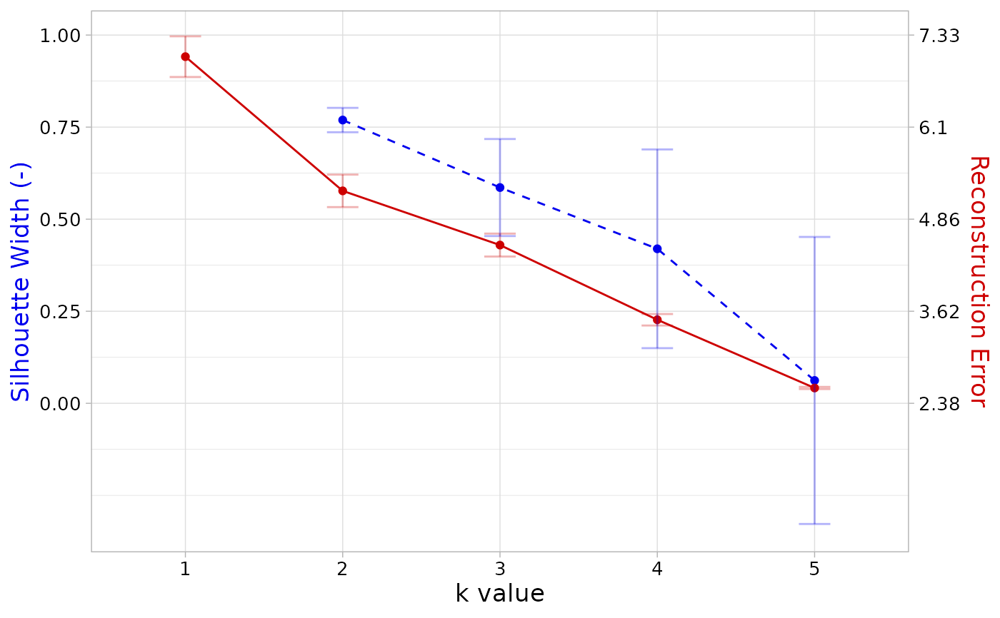

Compare the stability and error of various k values to help determine the correct number of signatures (k).
Usage
compare_k_vals(
musica,
modality,
reps = 100,
min_k = 1,
max_k = 10,
error_type = "prop",
algorithm = "nmf"
)Arguments
- musica
A
musicaobject.- modality
The modality to use, either "SBS96", "DBS78", or "IND83".
- reps
Number of times prediction is performed. For each replicate, the count table data is perturbed. Multiple replicates allows for stability analysis by calculating silhouette width on the multiple results. Default
100.- min_k
Lower range of number of signatures for discovery. Default
1.- max_k
Upper range of number of signatures for discovery. Default
10.- error_type
Whether to calculate reconstruction error by proportions ("prop") or raw counts ("raw"). Default
"prop".- algorithm
Algorithm for signature discovery. Default
"nmf".
Examples
data(musica)
compare_k_vals(musica, "SBS96", reps = 3, min_k = 1, max_k = 5)
#>
#> k = 1:
#> Calculating signatures on original count table...
#>
#> Replicate 1 of 3...
#> Replicate 2 of 3...
#> Replicate 3 of 3...
#>
#> k = 2:
#> Calculating signatures on original count table...
#>
#> Replicate 1 of 3...
#> Replicate 2 of 3...
#> Replicate 3 of 3...
#>
#> k = 3:
#> Calculating signatures on original count table...
#>
#> Replicate 1 of 3...
#> Replicate 2 of 3...
#> Replicate 3 of 3...
#>
#> k = 4:
#> Calculating signatures on original count table...
#>
#> Replicate 1 of 3...
#> Replicate 2 of 3...
#> Replicate 3 of 3...
#>
#> k = 5:
#> Calculating signatures on original count table...
#>
#> Replicate 1 of 3...
#> Replicate 2 of 3...
#> Replicate 3 of 3...
#> Warning: Removed 1 row containing missing values or values outside the scale range
#> (`geom_line()`).
#> Warning: Removed 1 row containing missing values or values outside the scale range
#> (`geom_point()`).

#> k sil_width min_sil_width max_sil_width sd_sil_width sterror_sil_width
#> 1 1 NA NA NA NA NA
#> 2 2 0.76921345 0.7258611 0.8230843 0.03308507 0.01169734
#> 3 3 0.58595575 0.4246059 0.7854054 0.13175082 0.03803318
#> 4 4 0.41958380 -0.2471206 0.8067669 0.26982599 0.06745650
#> 5 5 0.06202807 -0.3533419 0.8146364 0.38972497 0.08714515
#> error min_error max_error sd_error sterror_error
#> 1 7.043136 6.430394 7.333631 0.4135476 0.20677381
#> 2 5.239016 4.654886 5.559268 0.4007842 0.20039210
#> 3 4.510259 4.031071 4.744228 0.3270515 0.16352577
#> 4 3.505921 3.217509 3.761693 0.2410095 0.12050477
#> 5 2.588781 2.382737 2.801946 0.1789580 0.08947899